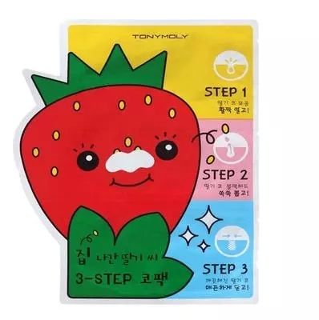

papa recipe春雨蜜罐蜂胶蚕丝面膜贴 纯天然蜂蜜补水保湿

原产地 : 韩国
容量 : (6g * 3片)
产品说明: 帮助干净去除毛孔杂物和黑头的鼻子专用贴膜。有效护理黑头，帮助镇静肌肤的去黑头贴膜。
[ Step 1 ]: 帮助软化毛孔，溶解皮脂，去除黑头。
[ Step 2 ]: 帮助去除黑头和角质的贴纸型鼻膜
[ Step 3 ]: 帮助干净镇静毛孔。
使用方法
1. 洗脸后，按照第一步骤取下鼻膜按鼻子模样紧贴后，等待15-20分钟后，慢慢取下。
2. 鼻子周围蘸取适量水分，按照第二步骤，将鼻膜紧贴于鼻子后，10-15分钟后，完全干燥后取下鼻膜。
3. 第二步骤使用后，按照第三步骤紧贴于需要护理的部位，5-10分钟后取下，将鼻子上剩余精华轻轻按摩拍打帮助吸收。